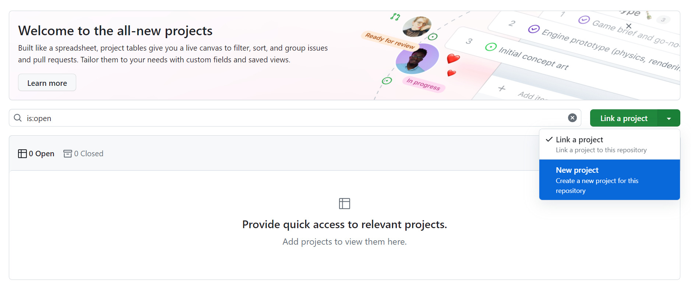

Project Management and Collaboration using GitHub
Collaboration:
Throughout your development career you will find multiple occasions within which you need to work collaboratively on a project. This could be a personal project that you are working on with friends, or an assignment that you need to complete for your degree. GitHub provides you with the inbuilt functionality to add collaborators to your repository and allow you to work as a team.
Collaborators are added to a GitHub project using the browser version of the service. Log into your account a navigate to the repository that you wish to work on with other people.
When you have done this, you must then click on the settings tab that is visible at the top of the screen.
Then, from the settings screen, choose “collaborators” from the left-hand side menu.
From the collaborators screen select the large button in the middle of the screen that says “add people”
Pressing this will open up the add collaborator window, in this Windows you can type the GitHub username, full name or e-mail address of the person you would like to collaborate with – and GitHub will populate the search box with everyone who meets your search criteria.
When you have found the person that you would like to add to your repository click on them, and the UI will update asking if you would like to add them to your repository.
Click the “Add (Username) to this repository” button to add the person you have searched for as one of your collaborators.
This will send an invitation to the user your have added to your repository asking if they would like to collaborate and if they accept they will gain access to your repository and be able to collaborate with you.
Once you have added your collaborator the user interface will update to show them as part of your repository, with the “add people” button being moved to the top right-hand side of the screen.
Using GitHub Projects:
In the last few months, GitHub have released a big update to their project management and collaboration tools. The new tools that GitHub have released are not only aimed at making project management more accessible but also to merge it with GitHub actions to automate the process.
Projects have several different use cases, and aren’t necessarily something that only benefits developers who are working as a team. Projects can be used as an individual to help manage work and keep in touch with things such as bugs, and deadlines.
Creating a Project
Projects don’t necessarily need to be created as part of a repository. If you would like to just create a project for testing, or for potentially adding to a repository in the future you can do so by visiting www.github.com/projects and following the steps below.
However, for the purpose of this tutorial we are going to add a project directly into our repository.
From the main repository view, select the “Projects” tab at the top of the screen:
This will redirect you to the “projects” screen which will look like the one below:
Select the arrow next to the “link a project” button (this is the button you would use if you wanted to link a project you had created previously) and select “new project”. Then press the newly changed “new project” green button.

You will then be redirected to the create a project Wizard, which will look similar to the screenshot below:
There are a lot of options to choose from here, but for our sake we are going to choose the “Kanban” template provided in the featured templates tab, which will create us a Kanban board. (If it is not available entering kanban into the search templates menu should bring it up) You can do this by highlighting over the name of the template and clicking on it.
A Kanban board is a project management tool that can be used to visualize the work tasks needed to be currently completed within a project. Popular project management tools such a Trello use Kanban boards as their project management structure.
Kanban boards consist of a large bank of tasks that need to be completed for a project to be considered complete. Each member of a team (or an individual) takes a task from the bank when they are working on it which moves it into an “in progress” state and then finally to a “completed” state until a task is done, with another task being taken from the bank. There is no limit to how many states a project can be in, but common ones within a Kanban board include the task bank, in progress, completed and on hold.
Once you have selected Kanban the screen will change to provide you with an overview of the project you have selected, and allow you to give it a name, enter a name of your choice and press “Create Project” to create your first project.
Your project will then refresh and show you your newly created Kanban board.
Adding Items to a Project
Adding Tasks
Before you begin to add tasks into your project, we are first going to remove the limit on the number of tasks you are allowed in each section of your Kanban board.
To do this, press the three dots at top of the individual section (in this case we are going to use “Backlog” a menu should appear).
“From here, press “Set Limit” and remove the value from the box that appears (or add any number you would prefer)
Press Save, and you will now be able to add as many tasks as you want to your board! Feel free to do this in the rest of the columns if you wish.
Issues
What are issues?
GitHub issues are items that are created in a repository, about that repository. Issues can be used for several different purposes, including tracking bugs, requesting features and managing tasks.
To keep GitHub projects as integrated as possible with the rest of their ecosystem, GitHub have chosen to make tasks the same as issues, so that any issues that are attached to a project become a task to solve.
You can add issues to a project yourself or wait for users of your project to add them for you.
Going forward when using the word “issue” it can be interchanged with the word “task” as they both represent the same thing in this context.
Adding Issues to a GitHub Project
From your main project screen, look at the bottom of your individual Kanban sections and you should see they all contain a section that says “add item” – for this example we are going to use the backlog section.
After clicking add item the button will update, telling you to type the name of your issue.
Write the name of a task you would like to add to your Kanban board and press enter to confirm. For the purpose of this demonstration, I’m going to call the task “Create Kanban Board” but you can call it whatever you like.
After pressing enter the section of the Kanban board you were working on will change, and a new task will be added.
Click on the name of the task and a new menu will appear which will give you several useful things you can add to your created task:
There a several options for you here, including:
- Adding a description to your action, giving more information on what is needed for that task.
- Setting the “Assignees” which are the people who are on the project (in this instance you might just have yourself, but in a team working scenario this could be any member of your team.)
- Priority allows you to assign the job an importance level, which allows you to ensure that vital jobs are completed when they should be.
- Size and estimate are both tools you can use to provide a ballpark figure about how long a job will take, size gives a selection of pre-made variants from XS-XL and estimate allows you to suggest any amount of time you like.
- Start Date and End Date allows you to set start and end dates for this action – these could be suggested start and end dates or actual ones. It’s up to you for what works best with your workflow.
All of these individual options can be accessed by clicking on the relevant sections.
When they are all set you may have something like this:
You will also notice that as you update these values in the wizard, the task on the kanban board will also update automatically:
When you have set all of your parameters you can then convert your task to an issue (if you wish, you can leave it as a draft Kanban board task if you would like.)
To do this, hover over your task until the three dots appear and click on them, then click the convert to issue drop down that appears:
GitHub will then ask you what repository you want to make this issue a part of (you may have a project that covers multiple repositories). Select the current repository you are working on from the dropdown that appears:
The task will then update to tell you that the task is now an issue and the repository that it is attached to:
Adding single Issues to a GitHub Repository
You may also want to add issues directly into your GitHub repository or simulate what would happen if a user was reporting an issue, or feature request, for your project.
To do this, first return to your main repository screen and press the “issues” tab located in the top toolbar:
This will take you into the issues screen. The first thing you will see is that the issue we have just created is already there,
We are going to ignore this for now and select the “new issue” option in the top right corner of the window.
This will direct you to the new issue creation window, where you can enter the name and description of the issue you are facing:
On the right-hand side of the screen, you will notice that, like when creating an issue directly into our project there are a couple of options, the first one, Assignees should look familiar. In this instance click the “Assign yourself” option to make the current issue yours.
We are going to come back to labels later, so ignore them for now and click on the “projects” section.
Click on the project you have just created to assign your new issue to this project.
Then when you are done press the “submit new issue” button at the bottom of the page, and your issue is now created, and you will be directed to the issue management screen.
Managing Issues
Managing issues is an important part of development, especially when working collaboratively with others. Good issue management, alongside effective use of projects can help to ensure a project runs smoothly and can also prevent issues from arising.
The managing issues screen can be broken up into several sections, the first is the largest section – issue communication, which can be used to respond to issues.
Responding to Issues:
This section of the issue window can be used for a variety of different reasons, you can use it to respond to users who have reported issues, or to report progress on issues for things that you have found.
To respond to an issue, write a comment in the box and then press the comment button to complete the process, the comment will then be added to the issue chain:
This gives you the ability to freely communicate on any issue as needed!
Labels
On the right-hand side of the screen, underneath assignees, which you should be familiar with by now, you will see the term labels we skipped over previously.

Labels give us the ability to categorise our issues, making organising them easier and also making specific issues easier to find.
Click on the labels button and a selection of commonly used labels will appear that you can assign to your Issue
However, for this demonstration we are going to create a new label – right click on the “edit labels” button at the bottom of the window and open it in a new tab.
This will redirect you to the GitHub labels screen:
Press the green “new label” button at the top right-hand side of the screen and the label creation wizard will be displayed underneath it:
Fill this window in with any information you like – I am going to create a “Project Management” label and make it orange.
For the colour section you can use any hex code to generate any custom colour you like – or just use the random button until you get a colour that is to your liking.
When your done and you creation wizard look similar to this you can click the create label button, this will add the label to the list you have available.
Refresh your issues page and select labels again, you should be able to see your newly created label in the list:
Select your newly created label and it will be added to your project, and your issue timeline will update:
Project Settings
Underneath labels in the list you will see project settings. If you attached your project to the issue when you created it, you should see the name of the project, and if you press the down arrow next to the project name get a familiar list of options for your action:
You can fill these sections in with information about your issue if you please, or you can leave them blank – it is up to you!
Automatic Branch Creation
You can also use the Issue management window to automatically create a branch that will relate to your issue. Which can be very useful if this is something you are sure you are going to work on.
To do this move down to the “Development” section of the issue window and choose the “create a new branch” link provided.
This will open up the branch creation window. GitHub will attempt to automatically generate a name for you, you can stick with this or choose your own. GitHub will also automatically put it into the repository that the Issue it attached to, you can again change this if you wish.
Finally, it will give you the option to access this branch in one of several different ways, how you choose to do this is completely up to you – but I am going to leave checkout locally selected.
When you are happy with your options press the “create” branch button, and your branch will be created and added to your repository, and the UI will update to show that the branch is attached to your current issue.
You can also use this feature to link issues to pull requests you make in development – though this is a slightly more advanced aspect of GitHub that is slightly out of the scope of this tutorial.
Closing an Issue
When an issue has been completed, you will need to mark it as completed inside of the action Window.
To do this write a comment as you normally would, but instead of pressing the standard “comment” button instead choose the “close with comment” button. Which, as the name suggests will close and issue with the comment you write.
The issue you created has now been closed, and the UI will refresh to update this.
Other GitHub Project Features
Return to your GitHub project board, and you will notice that your recently created GitHub action has been automatically moved to the “done” section, this is GitHub Project Automation at work, which is something we are going to go into more detail on later, but for now we are going to focus more on the different features of the GitHub project window.
Most of these features are in the top toolbar of the GitHub Project toolbar window, and can be accessed simply by clicking them:
Free Movement of Issues
Once you have created issues you are free to click and drag them to move around the Kanban board, this is especially useful for when you want to show that you are working on an issue, and helps the team know the status of all the various tasks.
To do this, simply choose an action you want to move and drag it to the location you want it to be:
Priority Board
The priority board gives you a list of all of your tasks sorted by their priority. This is a great visual tool for ensuring that essential issues are sorted quickly, to prevent the project from being held up.

Team Items
Team items breaks down currently assigned actions by team members, allowing you to see what tasks are still in progress by all of the different members of your team. It is also useful for re-assigning work from someone who may have too many tasks, preventing the project from falling behind.
Roadmap
Roadmap provides you with a visual representation of when your Issues need to be completed by providing you with a timeline of their deadlines. This is a nice visual way of planning around your deadlines and ensuring that deadlines are met.
My items
My items provides you with a breakdown of all of the individuals that you need to complete as part of the project, this can be very useful if you just want an easy to digest breakdown of the tasks you have left, helping you to stay on track.
Automating a GitHub Project
As mentioned previously, you closed the issue you created your project automatically moved it to the “done” section of your Kanban board. That is GitHub automation at work. When you create a Kanban board (or other projects) using GitHub projects there are several built in automations that GitHub provides you with.
It is possible to expand on these built-in automations using something called GitHub actions, but this is something that is more advanced, and requires you to learn a special markup language called YAML.
For this tutorial will we be using the in-built automations to complete some basic tasks, but if you feel like you would like to expand on this further, please do not hesitate to get in touch.
Accessing Projects Automations
To access GitHub projects built-in automations, select the three dots button that is visible at the top right of your project window, and select “workflows” to be relocated to the GitHub Project automations screen.
From here you will be able to see a list of the automations that GitHub provides be default.
Down the left-hand side of the screen, you will see all of the inbuilt automations that GitHub provides and in the centre of the screen it will show what the automation does. In the example above it does what we discussed previously, when an issue it set to closed it is automatically set to done.
Feel free to click through each of the automations on the left-hand side to look at their behaviour, each of them will be slightly different but should give you a good idea of what each of them are attempting to achieve.
Workflows that do not have a green circle next to them are currently inactive, so will not currently fire based on your actions. If you wish to switch any of these workflows on click the switch that is visible on the top right of the workflow

When you are done return to the “item closed” action, we are now going to edit this to instead move to “In Review” instead of “Done” when an item is closed.
Editing A Project Automation
To edit the selected project automation, press the “Edit” button that is next to the on off switch at the top right-hand side of the workflow.
This will unlock the workflow and allow us to edit it. Press the drop-down menu underneath set value and you should see each of the individual sections of your Kanban board to choose from.
Select the “In Review” option to change it so closed issues go to the in review section of the Kanban board, the UI should update to show this.
When this is the case navigate back to the top right-hand side of the screen and press the “save and turn on workflow” button.
And there you go! Your workflow is now updated. You can test it if you wish by creating and closing another issue, and once again checking your completed Kanban board.
These are only simple automations, but when you are just getting started these are most likely all you will need, as you begin to be more experienced with GitHub and programming in general you may find that you have more bespoke reasons for automation, which is when you should begin to look into CICD and GitHub actions.